Lighting Talk
brandon.okert@hootsuite.com
Sexy Noise
What is Noise
Sexy Noise vs Ugly Noise
Making Sweet Sweet Noise
Parting Thoughts
What is Noise?
What is Sexy Noise?
Noise that looks damn good
What's it Good For?
1 Dimension
Parametric Functions, Graphing, ...
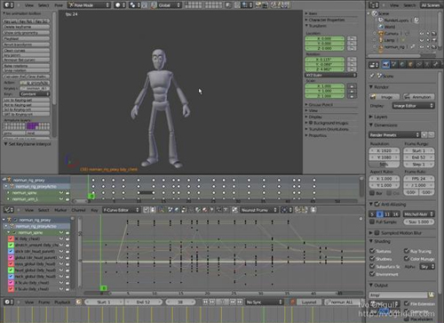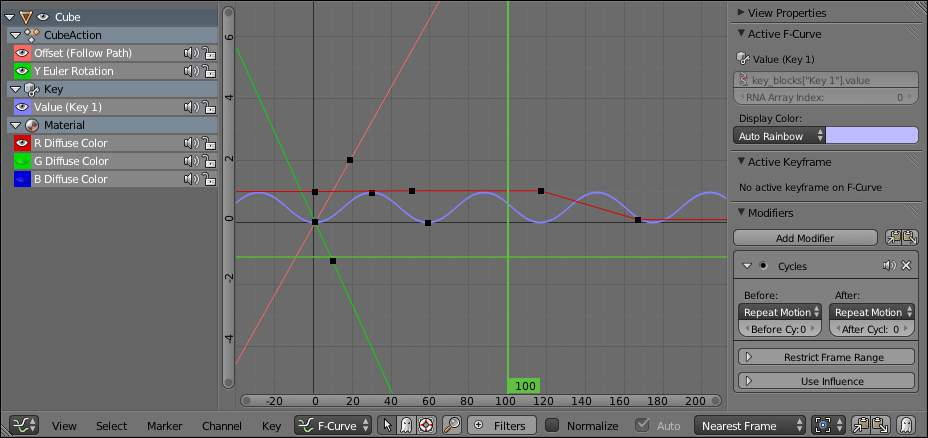2 Dimensions
Terrain Generation, Foliage Distribution, Textures, Normal Maps, ...
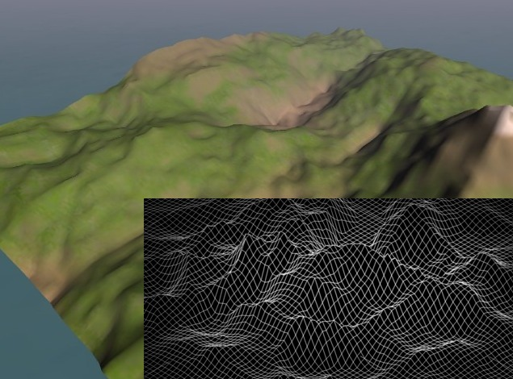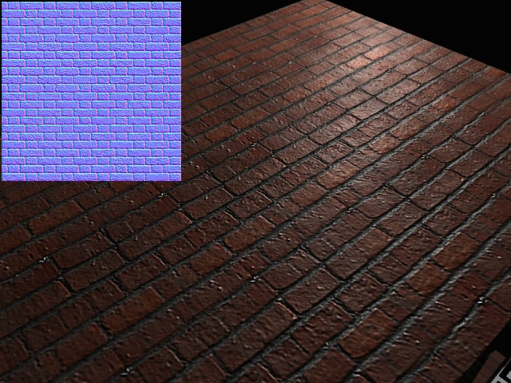3 Dimensions
3d Textures, Simulations, ...
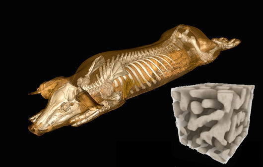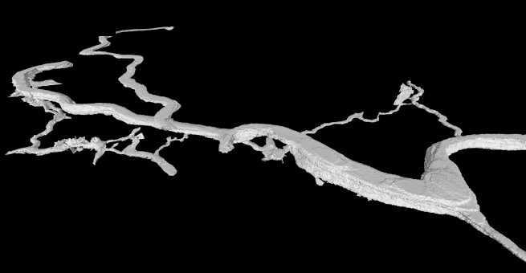4+ Dimensions
Particle Modelling, Sound Modelling, Magic, ...
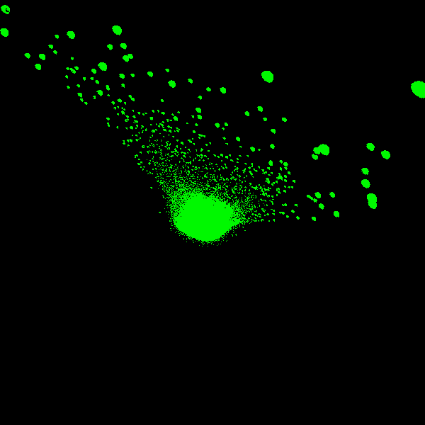
Sexy Noise vs Ugly Noise
Natural vs Unnatural
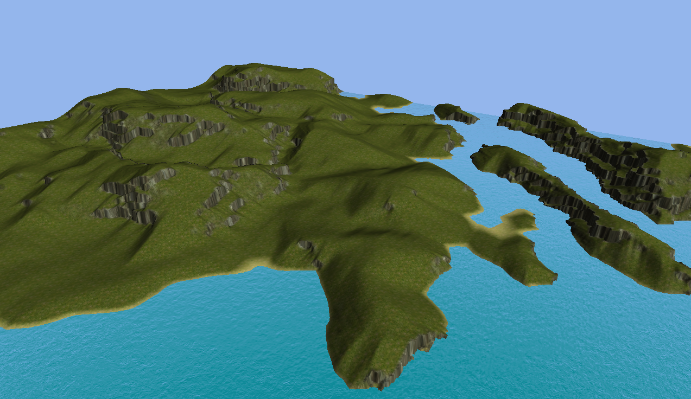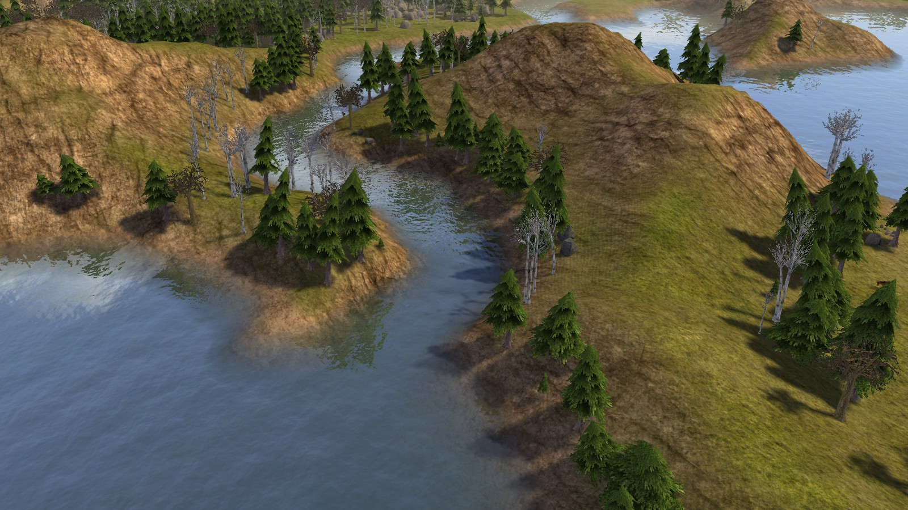Asymmetric vs Repeated
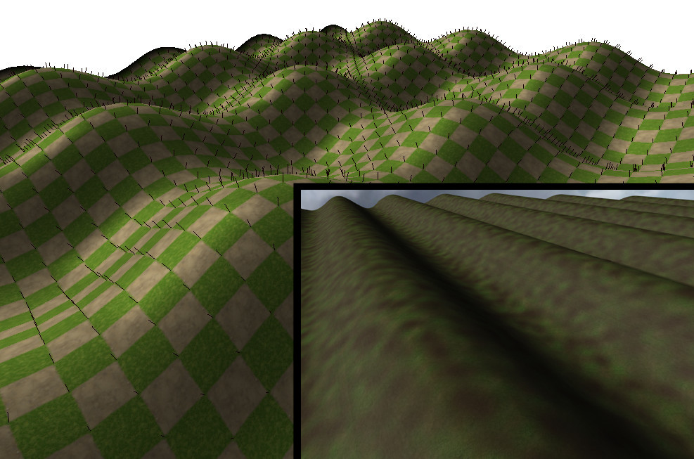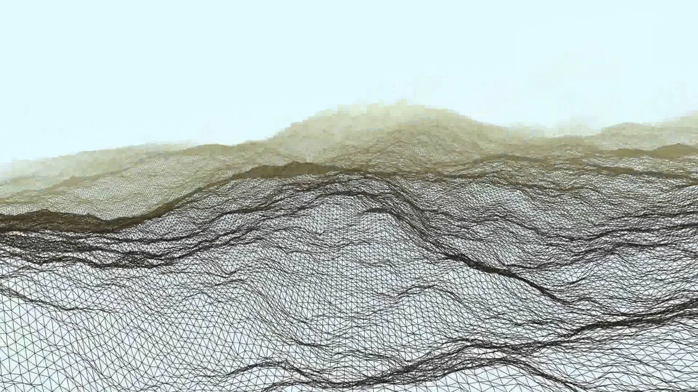Few Artifacts vs Strange Features
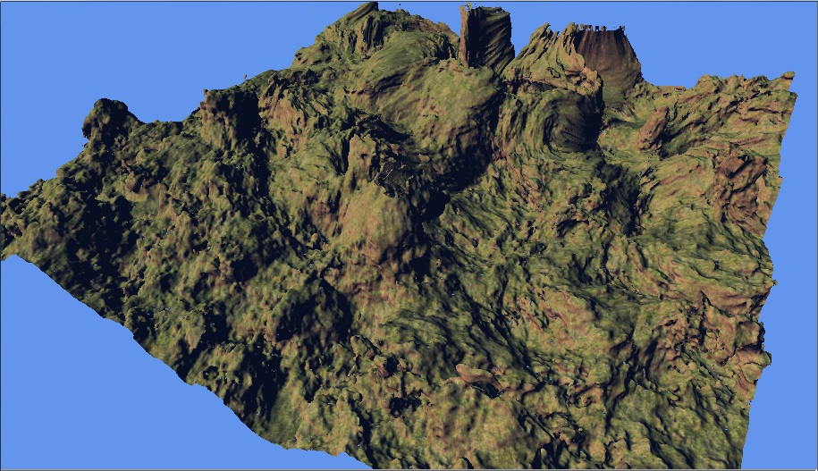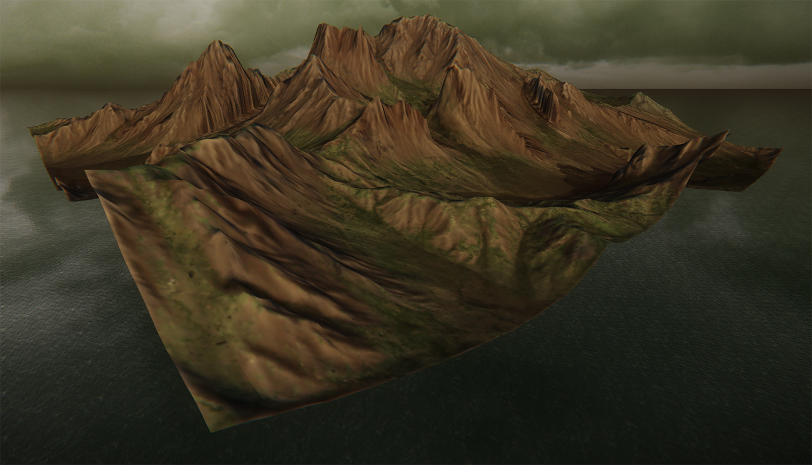Smooth vs Jagged
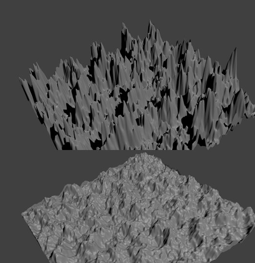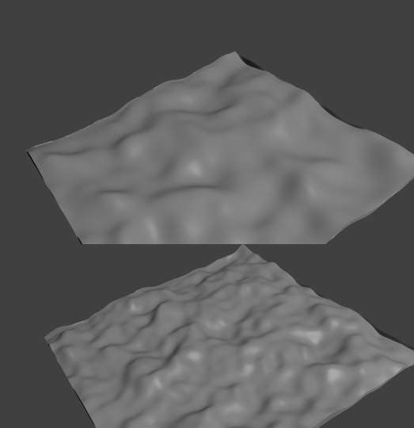Making Sweet Sweet Noise
Random Noise
Midpoint/Diamond-Square
Perlin Noise
Tron 1981
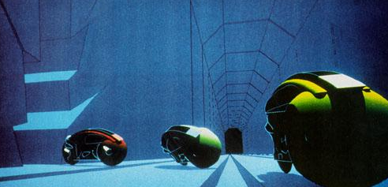 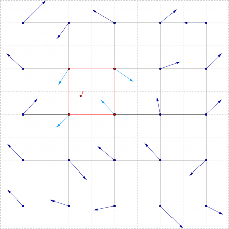
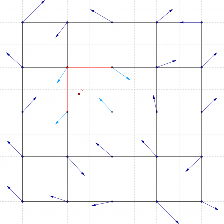Other Methods
Simplex Noise
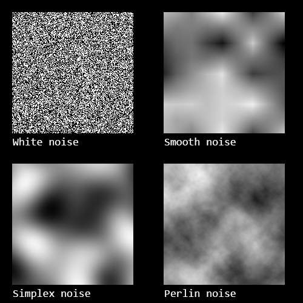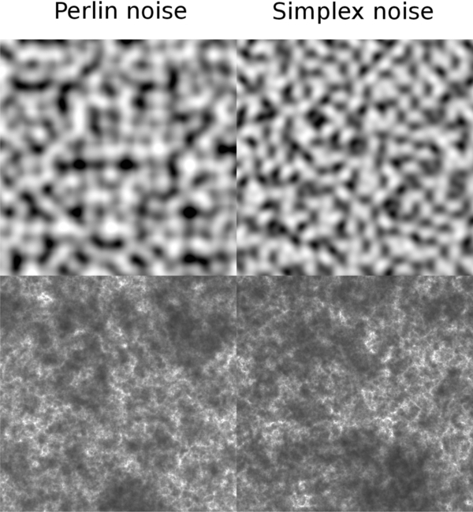Brownian Noise
 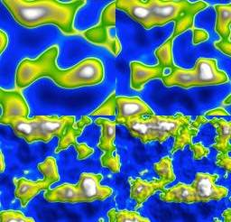
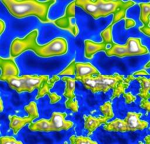Fractal Noise
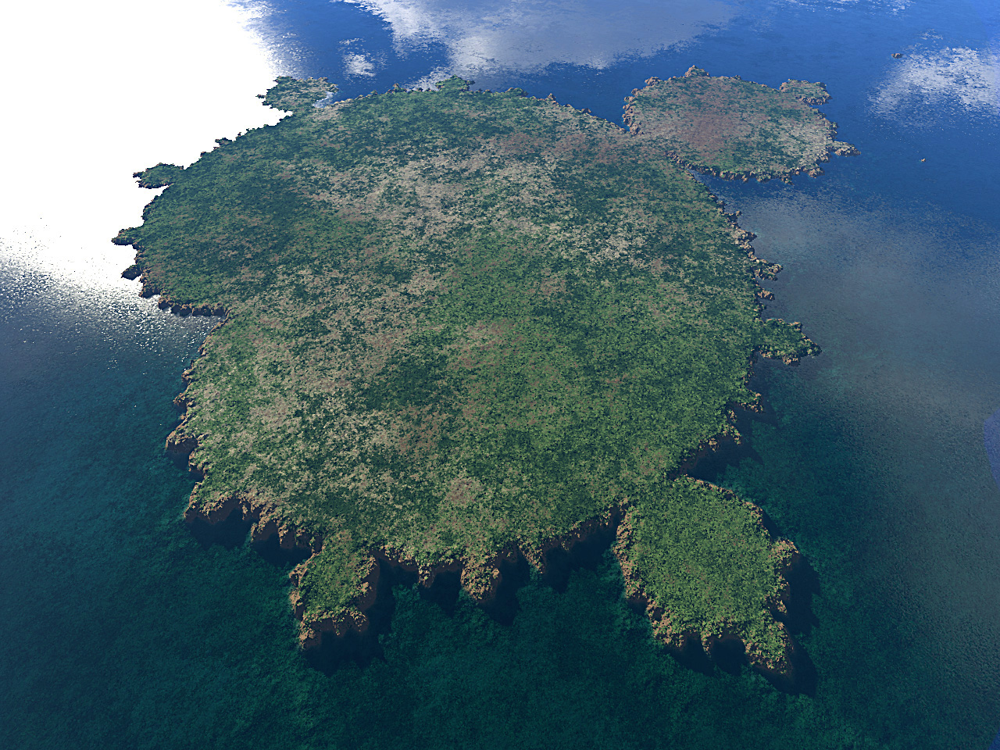Parting Thoughts
No Noise is Good Noise... Except Perlin Noise